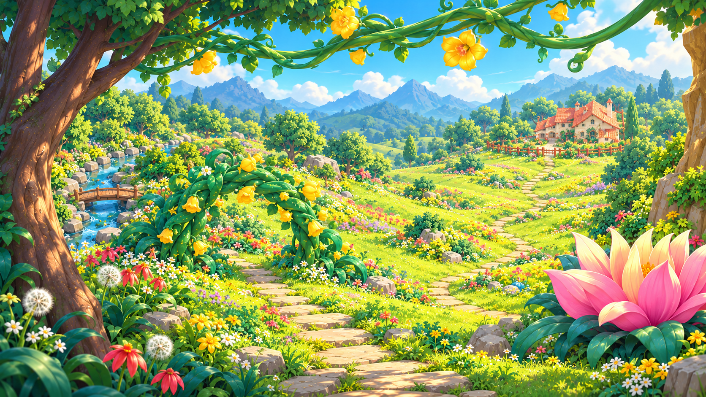
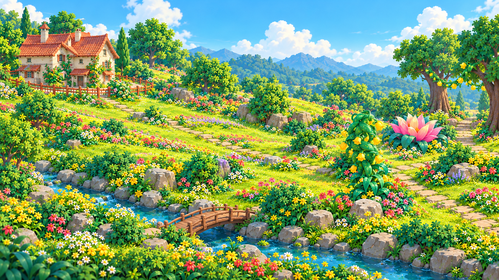
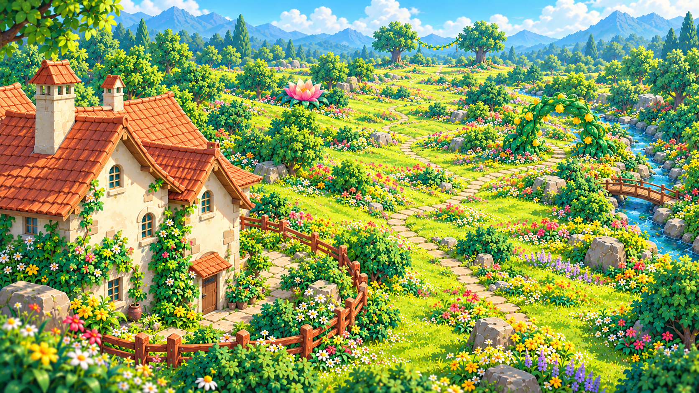
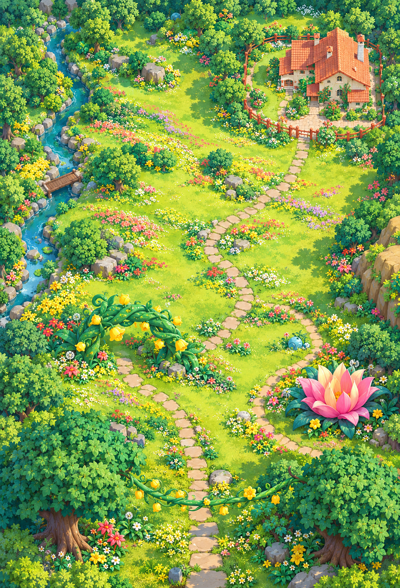

神秘花海 · 多视角设计参考
四张图围绕同一空间布局绘制：南侧为入口，北侧为远方花屋。房屋按正常两层建筑尺度布置，前视图中的大小来自远近透视。以下为 AI 场景设计图；后视图对原图未展示的部分作风格补全，非实机截图或测绘图。








四张图围绕同一空间布局绘制：南侧为入口，北侧为远方花屋。房屋按正常两层建筑尺度布置，前视图中的大小来自远近透视。以下为 AI 场景设计图；后视图对原图未展示的部分作风格补全，非实机截图或测绘图。



